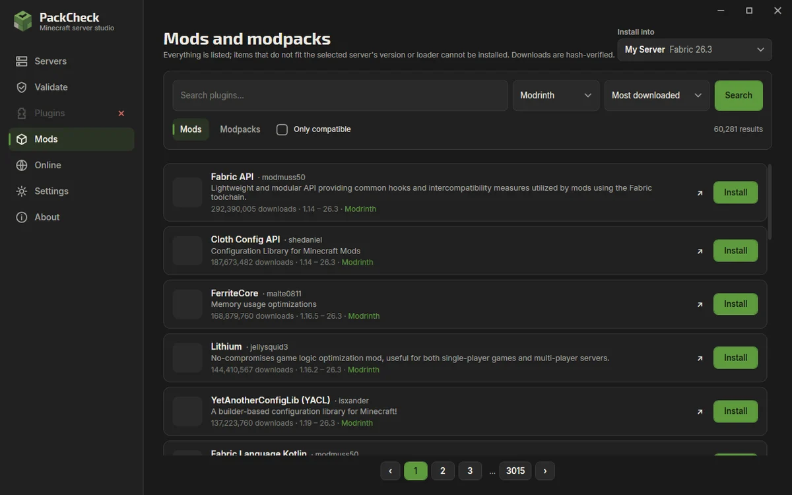

-
Create it
Start from a profile – survival with friends, modded, creative, minigames, hardcore or a low-end PC – then adjust what you like.
- RAM slider from 1 to 32 GB, with a warning when Windows would run short
- Limit CPU cores so your games stay smooth
- Game mode, difficulty, players, view distance, whitelist and MOTD
- A free port is picked for you; the right Java is installed automatically

-
Run it
A dashboard that tells you at a glance whether the server is healthy.
- TPS, CPU, RAM and ping gauges with history
- Console with search, clickable player names and crash detection
- Files tab with a code editor that checks YAML and JSON before saving
- Backups, restart, and a tray menu that keeps servers running when the window is closed

-
Add plugins and mods
Browse Modrinth, Hangar and CurseForge without searching first, sorted and filtered by category.
- Anything that does not fit your server's version or loader says why
- Project details with the full description
- An Update button when a newer compatible file exists
- Modrinth modpacks install file by file with hash checks

-
Invite your friends
Open the server to the internet with one button, and get a straight answer when the router is in the way.
- Windows firewall rule and UPnP router forwarding
- A step-by-step forwarding guide with the exact values for your router
- Test from outside: see whether friends can really reach you
- Your own domain records or a free DuckDNS name

-
Check before you update
Validate the server before adding or updating plugins, and again whenever something feels off.
- Missing dependencies, wrong Minecraft versions, duplicates, corrupt jars
- Findings grouped by severity, category or file, each with evidence and a fix
- Run history with what changed since last time

Your Minecraft server, running on your own PC.
PackCheck creates the server, installs the right Java, shows you how it is doing, keeps plugins and mods compatible and helps friends join. Free for Windows.
Version 3.1.2 · Windows 10 and 11 · EXE or MSI, no admin rights · MIT license
 friends-survival · Paper 26.3 · :25565
Starting
friends-survival · Paper 26.3 · :25565
Starting